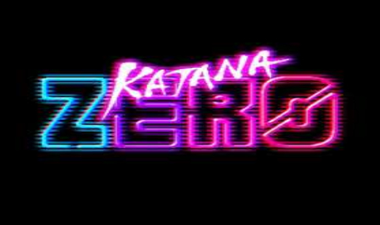

Katana Zero, Askiisoft tarafından geliştirilen ve hızlı tempolu aksiyonuyla öne çıkan bir platform/aksiyon oyunudur. Oyuncular, zamanı manipüle edebilen gizemli bir suikastçıyı kontrol ederek düşmanlarını tek hamlede alt etmeye çalışır. Neon tarzı görselleri, akıcı dövüş mekanikleri ve derin hikayesiyle dikkat çeken oyun, reflekslere dayalı oynanışıyla her bölümü adeta bir bulmacaya dönüştürür. Tek vuruşta ölme sistemi sayesinde strateji ve zamanlama büyük önem taşır. Katana Zero, stil sahibi aksiyon sahneleri ve sürükleyici anlatımıyla türünün en özgün yapımlarından biridir. BallasNet üzerinden oyunun detaylarını inceleyebilir, sistem gereksinimlerini öğrenebilir ve benzer platform/aksiyon oyunlarını keşfedebilirsiniz.
SİSTEM GEREKSİNİMLERİ
Minimum
- OS: Windows 7 / 8 / 8.1 / 10 x64
- İşlemci: Intel Pentium E2180 veya eşdeğeri
- RAM: 1 GB
- Ekran Kartı: GeForce 7600 GT (256 MB)
- DirectX: Sürüm 10
- Disk: 200 MB boş alan
Önerilen
- OS: Windows 7 / 8 / 8.1 / 10 x64
- İşlemci: Intel Core i3-3240 veya eşdeğeri
- RAM: 2 GB
- Ekran Kartı: GeForce 8800 GTS (512 MB)
- DirectX: Sürüm 10
- Disk: 200 MB boş alan
LİNKLER
RESMİ İNDİRME LİNKLERİ
BENZER OYUNLAR
Katana Zero Nedir?
Katana Zero, Askiisoft tarafından geliştirilen ve Devolver Digital tarafından yayınlanan neo-noir tarzında bir 2D aksiyon platform oyunudur. PC, Nintendo Switch ve Xbox One platformlarında oynanabilen bu oyun, zaman manipülasyonu mekaniği ve "anında ölüm" sistemiyle dikkat çeker. Oyuncular, bir samuray kılıcı kullanan ve zamanı yavaşlatma yeteneğine sahip olan "Sıfır" kod adlı bir suikastçıyı kontrol eder. Neo-noir atmosferi, sentetik müzikleri ve piksel art görsel stiliyle unutulmaz bir deneyim sunar.
Oynanış Özellikleri
- Zamanı yavaşlatarak düşman saldırılarını def edin ve stratejik hamleler yapın.
- Bir vuruşta ölüm mekaniği - tek hata tüm bölümü sıfırlar.
- Seviyeleri çoklu yollarla tamamlayın; yaratıcı yaklaşımlar ödüllendirilir.
- Neo-noir hikaye anlatımı ve gizemli diyalog seçenekleri.
- Sentetik dalga (synthwave) tarzında özgün soundtrack.
- Piksel art grafikleri ve akıcı animasyonlar.
Katana Zero Türkçe Nasıl Oynanır?
Oyun resmi olarak Türkçe desteği içermektedir; Steam sürümünde Türkçe dil seçeneği mevcuttur. Alternatif olarak Türkçe yama dosyalarını oyunun ana dizinine kopyalayarak da Türkçe oynayabilirsiniz.
VİRÜS TARAMASI SONUÇLARI
Katana Zero oyun dosyalarını kapsamlı bir virüs taramasından geçirdik, dosyalarda herhangi bir virüs bulunamadı.